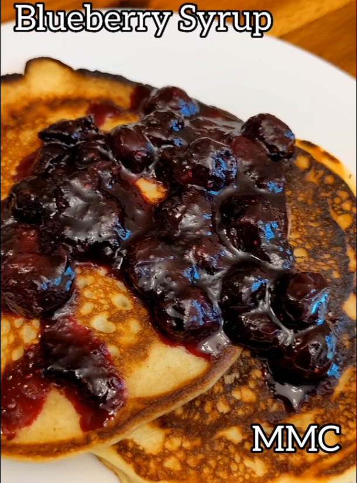

<
Blueberry Syrup
Blueberry Syrup

Or as someone may say, it's called a compote. This is a great way to use the fruits you
have at home and don't want to toss. You can use almost any kind of fruit like apples, peaches,
etc.
This recipe was shared in gif recipes subreddit, originally published by Daniel Troyer in rapadura
website.
Ingredients
- 1 cup frozen or fresh blueberries
- 1 Tbsp lemon juice
- 2 Tbsp sugar
- 1 Tbsp maple syrup
- 1 small pinch of salt
Steps
- Add blueberries, lemon juice, sugar, syrup and salt to a pan
- Bring to a light boil on medium heat. Reduce until it forms a thick sauce. It should take about 5 to 10 minutes.
- Check sweetness levels and adjust sugar. Each batch of blueberries can vary in acidity so you may need more sugar.